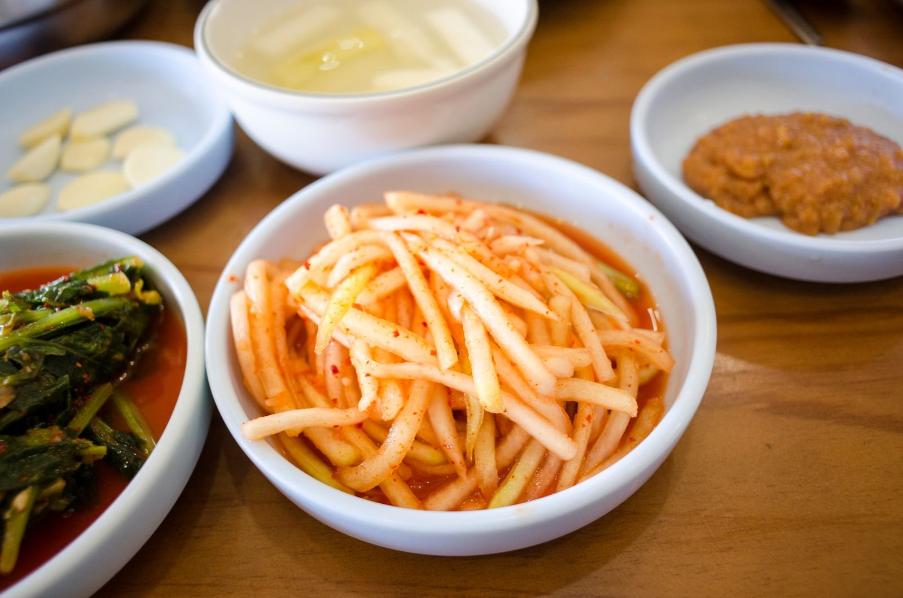

화롄 한식당 금성한정식, 몇 시에 가야 먹을 수 있을까?
점심 두 시간 반, 저녁 두 시간 반 — 짧은 영업시간과 적은 좌석, 정식 한 상 구성까지 가기 전에 알아 둘 것만 골랐습니다.
게시
"화롄에서 며칠 지내다 보니 김치랑 밥이 그리운데, 한식당 어디 없을까요?" 화롄 시내 博愛街(보아이제)에 있는 화롄 한식당 금성한정식(金星韓定食)은 맛집 지도에 여행자가 직접 등록한 곳이에요. 구글 지도 등록 정보, 배달 앱 매장 페이지, 현지 블로그 방문 후기를 바탕으로 2026년 10월 기준으로 정리해봤어요.
01 · 금성한정식 기본 정보, 한눈에 보기
| 항목 | 금성한정식(金星韓定食) |
|---|---|
| 주소 | 花蓮縣花蓮市博愛街86號 (화롄 시내, 화롄역에서 직선 약 2km) |
| 영업시간 | 월~토 12:00~14:30 / 18:00~20:30 (구글 지도 등록 정보) |
| 휴무 | 일요일 |
| 예약 | 받지 않음 (구글 지도 등록명에 '無提供訂位' 표기) |
| 배달 | foodpanda·Uber Eats 입점 |
| 가격 예 | 돼지불고기 정식 NT$220 (2023년 7월 방문 후기) |
영업시간은 2026년 10월 기준 구글 지도 등록 정보예요. 배달 앱에는 점심 12:30~14:00, 저녁 18:30~20:00 전후로 더 짧게 잡혀 있어서, 매장에 직접 간다면 마감 30분 전에는 도착하는 편이 안전합니다.
02 · 금성한정식 정식 한 상에는 뭐가 나올까
2023년 7월 현지 블로거의 방문 후기를 보면 돼지불고기 정식(韓式烤肉定食)에 반찬 6가지, 불고기, 밥 한 공기, 국 한 그릇, 김이 함께 나왔고 가격은 NT$220이었어요. 후기에서는 잔멸치 반찬이 특히 맛있었다고 했습니다. 2024년 9월에 덧붙인 사진에는 짜장면과 짬뽕(炒碼麵)도 있어서 정식 말고 면 요리도 고를 수 있어요. 가격은 그 뒤에 바뀌었을 수 있으니 현장 메뉴판을 확인하세요.

03 · 가기 전에 알아 둘 것
일요일은 쉬어요 월~토에만 문을 열어요. 화롄 일정이 주말에 걸리면 토요일로 잡는 게 안전합니다.
점심은 14:30까지 2023년 후기에도 점심 영업이 2시 반까지라고 적혀 있어요. 투어 끝나고 늦은 점심을 먹을 생각이면 마감 시간부터 확인하세요.
좌석이 적어요 후기에 따르면 매장 공식 페이스북에도 좌석이 적다고 안내돼 있어요. 식사 시간 한가운데를 조금 피해 가면 덜 기다릴 수 있어요.
예약은 안 돼요 구글 지도 등록명에 예약을 받지 않는다고 적혀 있어요. 인원이 많으면 포장이나 배달도 방법이에요.
숙소에서 배달로도 foodpanda와 Uber Eats에 입점해 있고, foodpanda 평점은 4.9점(리뷰 89개)으로 나와 있어요(2026년 10월 확인).
04 · 화롄 시내 다른 한식당도 같이 보기
금성한정식이 쉬는 날이나 자리가 없을 때는 같은 博愛街에 있는 夫婦韓食堂 부부한식당(博愛街117號, 김밥 위주)이나, 현지 블로그에서 화롄의 오래된 한식당으로 소개하는 아리랑 한식당(阿里郎韓式料理)도 맛집 지도에 있어요. 부부한식당은 영업시간이 후기마다 달라서 방문 전에 구글 지도로 확인하는 걸 추천합니다.
"套餐有6樣小菜+一份烤豬肉+一碗白飯+一碗湯+一份小海苔." — 정식에 반찬 6가지, 불고기, 밥, 국, 김이 나왔다는 2023년 현지 블로거의 방문 후기예요.
화롄 한식당을 더 보고 싶다면 화롄 한식 맛집 목록과 화롄 맛집 지도를 함께 보세요. 상세 페이지는 金星韓定食 금성한정식에 있고, 아직 숙소를 정하지 않았다면 화롄 숙소 위치 가이드도 참고할 수 있어요.
지도에서 화롄 한식 맛집도 확인해보세요
금성한정식, 부부한식당, 아리랑까지 화롄 시내 한식당을 지도에서 한 번에 볼 수 있어요.